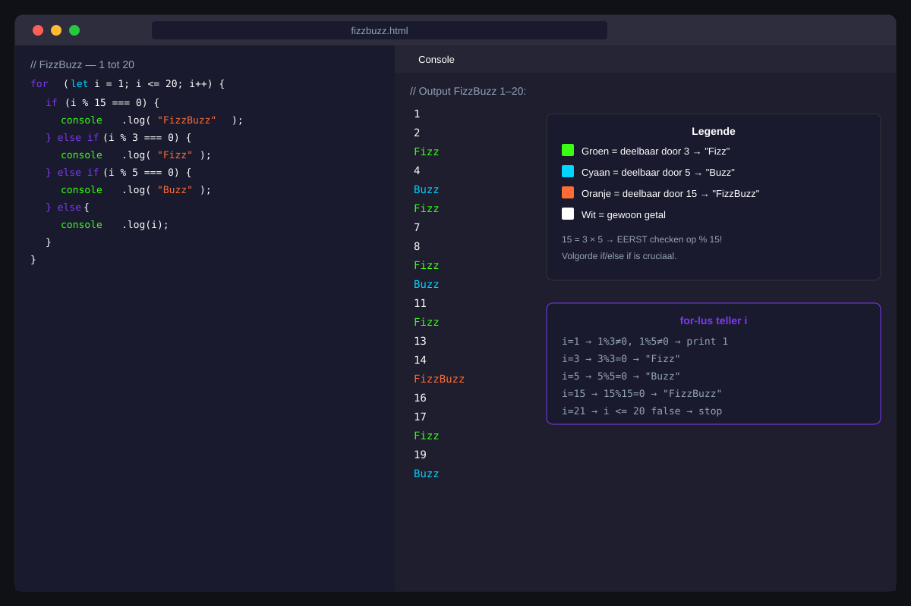

Lussen
- Een
while-lus schrijven en het gevaar van een oneindige lus vermijden - Een
for-lus schrijven met initialisatie, voorwaarde en update - Kiezen tussen
whileenforop basis van de situatie breakgebruiken om een lus vroegtijdig te stoppencontinuegebruiken om een iteratie over te slaan- Een
for...of-lus toepassen om over een reeks te herhalen
24.1 Waarom lussen?
Stel je voor: je wil de getallen 1 tot 100 in de console tonen. Zonder lussen zou je 100 keer console.log(...) moeten schrijven. Dat is niet alleen veel werk — als de grens verandert naar 1000 moet je alles herschrijven.
Lussen (ook wel iteraties of loops genoemd) laten je een stuk code meerdere keren herhalen zolang een bepaalde voorwaarde geldt. Dat is een van de meest fundamentele concepten in programmeren.
24.2 De while-lus
Structuur
while (voorwaarde) {
// code die herhaald wordt zolang voorwaarde TRUE is
}Hoe werkt dit?
- JavaScript controleert de voorwaarde
- Als de voorwaarde
trueis → voer de code in de accolades uit - Ga terug naar stap 1
- Als de voorwaarde
falseis → stop de lus
Voorbeeld: tellen tot 5
let teller = 1;
while (teller <= 5) {
console.log(teller);
teller++; // teller verhogen — zonder dit: oneindige lus!
}
// Uitvoer: 1 2 3 4 5Als je vergeet de teller te verhogen, wordt de voorwaarde nooit false en loopt de lus voor altijd. Dit blokkeert de browser.
// GEVAARLIJK — teller++ ontbreekt
let teller = 1;
while (teller <= 5) {
console.log(teller);
// teller blijft altijd 1 → oneindige lus!
}Wanneer gebruik je while?
while gebruik je als je niet op voorhand weet hoe vaak de lus moet herhalen. Bijvoorbeeld: blijf vragen tot de gebruiker een geldig antwoord geeft.
let antwoord = "";
while (antwoord !== "stop") {
antwoord = prompt("Type iets (of 'stop' om te stoppen):");
console.log("Je typte:", antwoord);
}
console.log("Klaar!");24.3 De for-lus
Structuur
De for-lus bundelt alles op één lijn: de startwaarde, de voorwaarde en de update.
for (initialisatie; voorwaarde; update) {
// code die herhaald wordt
}Voorbeeld: tellen tot 5
for (let i = 1; i <= 5; i++) {
console.log(i);
}
// Uitvoer: 1 2 3 4 5De variabele i bestaat alleen binnen de lus. Buiten de lus bestaat i niet meer.
Aftellen
for (let i = 5; i >= 1; i--) {
console.log(i);
}
// Uitvoer: 5 4 3 2 1Stappen van twee
for (let i = 0; i <= 10; i += 2) {
console.log(i);
}
// Uitvoer: 0 2 4 6 8 10Telvariabele gebruiken in berekeningen
for (let i = 1; i <= 5; i++) {
let kwadraat = i * i;
console.log(`${i} kwadraat = ${kwadraat}`);
}
// Uitvoer:
// 1 kwadraat = 1
// 2 kwadraat = 4
// 3 kwadraat = 9
// 4 kwadraat = 16
// 5 kwadraat = 2524.4 Wanneer while, wanneer for?
| Situatie | Gebruik |
|---|---|
| Je weet op voorhand hoe vaak je herhaalt | for |
| Je telt op of af van een getal naar een ander | for |
| Je weet niet op voorhand wanneer je stopt | while |
| Je herhaalt tot een conditie verandert | while |
Als je een teller nodig hebt → for. Als je wacht op iets → while.
24.5 break en continue
break — de lus vroegtijdig stoppen
Met break verlaat je de lus onmiddellijk, ook als de voorwaarde nog true is.
for (let i = 1; i <= 10; i++) {
if (i === 6) {
break; // stop de lus zodra i gelijk is aan 6
}
console.log(i);
}
// Uitvoer: 1 2 3 4 5continue — huidige iteratie overslaan
Met continue sla je de rest van de huidige iteratie over en ga je meteen naar de volgende.
for (let i = 1; i <= 10; i++) {
if (i % 2 === 0) {
continue; // sla even getallen over
}
console.log(i);
}
// Uitvoer: 1 3 5 7 9break | continue | |
|---|---|---|
| Wat stopt het? | De hele lus | Alleen de huidige iteratie |
| Wat volgt daarna? | Code na de lus | Volgende iteratie van de lus |
24.6 for...of — herhalen over een reeks
for...of is de modernste manier om over een reeks te herhalen. Je krijgt automatisch elk element, zonder dat je een teller bijhoudt.
let vakken = ["Netwerken", "App-ontwikkeling", "Databeheer", "E-STEM"];
for (let vak of vakken) {
console.log(`Vak: ${vak}`);
}
// Uitvoer:
// Vak: Netwerken
// Vak: App-ontwikkeling
// Vak: Databeheer
// Vak: E-STEMOefeningen
FizzBuzz is een klassieke programmeeroefening die wereldwijd gebruikt wordt om basiskennis van lussen en voorwaarden te testen.
De regels:
- Toon de getallen van 1 tot en met 100
- Als het getal deelbaar is door 3 → toon
"Fizz" - Als het getal deelbaar is door 5 → toon
"Buzz" - Als het getal deelbaar is door zowel 3 als 5 → toon
"FizzBuzz" - In alle andere gevallen → toon gewoon het getal
Controleer eerst de combinatie (deelbaar door 15) — anders wordt die nooit bereikt!

Schrijf een programma dat de som berekent van alle gehele getallen van 1 tot en met n.
Voorbeeld: als n = 5, dan is de som 1 + 2 + 3 + 4 + 5 = 15.
Stappenplan:
- Maak een variabele
nen geef die een waarde (bv. 10) - Maak een variabele
somen zet die op 0 - Gebruik een
for-lus om alle getallen van 1 totnop te tellen - Toon de som na de lus
Uitbreiding: Probeer hetzelfde met een while-lus.
Huistaak
Opdracht: Maaltafelgenerator
Deel 1 — Maaltafel van één getal (4 punten)
- Maak een variabele
getalmet een waarde naar keuze (bv. 7) - Gebruik een
for-lus om de maaltafel vangetalte tonen van 1 tot 10 - Elke lijn toont:
7 × 1 = 7,7 × 2 = 14, enz. - Gebruik template literals voor de output
Deel 2 — Priemgetallen (6 punten)
- Schrijf een programma dat alle priemgetallen van 2 tot 50 toont
- Een priemgetal is enkel deelbaar door 1 en zichzelf
- Gebruik een geneste lus: de buitenste itereert over kandidaatgetallen, de binnenste controleert of het een priemgetal is
- Gebruik
breakzodra je een deler vindt
Vragenlijst
Controleer of je de leerstof van dit hoofdstuk begrijpt.
Wat is het gevaar van een oneindige lus?
Welke lus gebruik je als je niet op voorhand weet hoe vaak je moet herhalen?
Wat doet break in een lus?
Wat is de uitvoer van: for (let i = 0; i < 3; i++) { console.log(i); }?
Wat doet continue in een lus?
Welke lus gebruik je om automatisch over elk element van een array te gaan zonder een teller bij te houden?